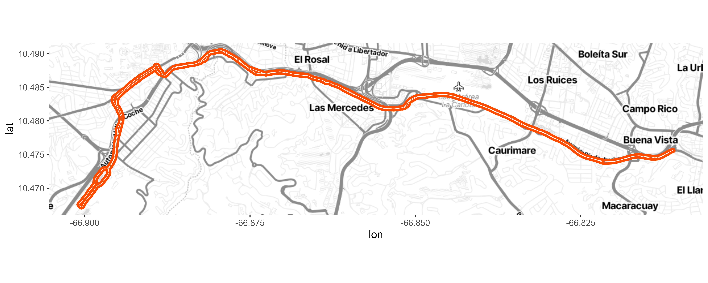
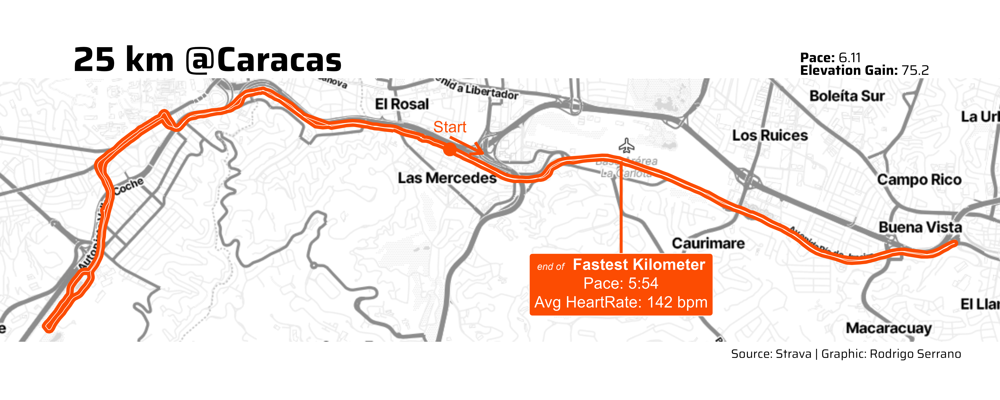

knitr::opts_chunk$set(
eval = TRUE,
message = FALSE,
warning = FALSE,
dev = "ragg_png",
dpi = 300
)
.post_path <- 'posts/strava-route-visualization'
here::i_am(glue::glue('{.post_path}/index.qmd'))
renv::use(lockfile = here::here(.post_path, "renv.lock"))This is a tutorial-like post to practice data manipulation, visualization and API principles. There has been one year since I started running in a weekly basis, and recently I completed my longest run so far (25km). I log my runs in Strava which has an API with free features that let you get some stats and even route points. Lets build a visualization of this run.
library(dplyr) # Data manipulation
library(httr2) # Make HTTP requests
library(jsonlite) # Handle json files
library(ggmap) # Mapping geometries
library(purrr) # Manipulate list elegantly
library(ggplot2) # Visualizations
library(here) # Working directory helper
library(systemfonts) # Work with fonts
library(ragg) # Work with fontsGET Strava Activity Data
To extract data from strava, you need to create and register an app to get credentials. Follow steps in Getting Started.
Strava API use OAuth authentication protocol. Hadley has an article that explain how to connect OAuth from R using httr2
Basically it consist in getting credentials (client ID and secrets) and create the client to perform the authentication flow.
# Set client
client <- httr2::oauth_client(
id = Sys.getenv('STRAVA_CLIENT_ID'),
secret = Sys.getenv('STRAVA_CLIENT_SECRET'),
token_url = "https://www.strava.com/oauth/token",
name = "strava-oauth-test"
)
# Apply client flow
oauth <- httr2::oauth_flow_auth_code(
client = client,
auth_url = 'https://www.strava.com/oauth/authorize',
scope = 'activity:read'
)
# Save temporal access token in environtment
Sys.setenv("STRAVA_ACCESS_TOKEN" = oauth$access_token)Activity ID is explicit in the url of the strava webpage for the required activtity. We hit the /activity endpoint setting the activity target id
activity <- request("https://www.strava.com/api/v3/activities/11886025399") %>%
httr2::req_auth_bearer_token(
Sys.getenv("STRAVA_ACCESS_TOKEN")
) %>%
httr2::req_url_query(include_all_efforts = T) %>% # Include Splits and efforts
req_perform() %>%
resp_body_json()Bulding dataframes for the visualization
We got metrics for the activity like total distance, moving time and elevation. Lets store them to use in the visual
metrics <- activity %>%
keep_at(c('distance', 'moving_time', 'total_elevation_gain', 'average_heartrate')) %>%
flatten_dfc() %>%
mutate(
moving_time = moving_time/60,
distance = distance/1000,
pace = moving_time/distance
)
metrics# A tibble: 1 × 5
distance moving_time total_elevation_gain average_heartrate pace
<dbl> <dbl> <dbl> <dbl> <dbl>
1 25.3 155. 75.2 147. 6.11We want to plot the route of the run, so we need to extract the polyline. This comes encoded with google algorithm, we can use googlePolylines package to decode it.
route <- activity %>%
pluck('map', 'polyline', 1) %>%
googlePolylines::decode() %>%
pluck(1) %>%
mutate(
# Compute Distance between points to locate the fastest split in the polyline
dist = geosphere::distHaversine(
cbind(lon, lat),
cbind(lag(lon), lag(lat))
),
distcum = cumsum(tidyr::replace_na(dist, 0))
)To apply a map backgroung we can use ggmap and the free tier of stadia maps. It needs an API key that you could get folling instructions in the ggmap readme
bbox <- make_bbox(lon, lat, data = route)
map <- get_stadiamap( bbox = bbox, maptype = "stamen_toner_lite", zoom = 14 )So far we have elements to build a visual with the route in a city map background
.linecolor <- '#fc4c02'
map_route <- ggmap(map) +
# Path (route)
geom_path(
data = route,
color = .linecolor,
linewidth = 2.5,
aes(x = lon, y = lat)
) +
geom_path(
data = route,
color = 'white',
linewidth = 0.2,
aes(x = lon, y = lat)
)
map_route
There is no clear initial and finish points in the route. That is because I did a circuit. Lets add it to make it more explicit
start <- route %>%
# First record of route is start
slice_head(n = 1) %>%
mutate(label_ = 'Start')
# Points to build an arrow to signal start direction
start_arrow <- route %>%
filter(
row_number() %in% c(1, 6)
) %>%
select(lat, lon) %>%
mutate(
lat = lat+0.0012,
aux = c('start', 'end')
) %>%
tidyr::pivot_wider(names_from = aux, values_from = c(lat, lon))Strava also logs performance metrics for every kilometer, they call it splits. We can investigate the location of the fastest split.
splits <- activity$splits_metric %>%
map(~flatten(.x) %>% as_tibble) %>%
list_rbind() %>%
mutate(
# Get pace in minutes per kilometer
pace = (lubridate::today() + lubridate::seconds_to_period(moving_time)) %>%
format(format = '%M:%S') %>%
stringr::str_remove('^0')
)
best_split <- splits %>%
filter(distance == 1000) %>% # Omit final split with less than 1 km of distance
slice_min(order_by = moving_time, n = 1, with_ties = FALSE)
# Last point of the fastest kilometer
best_split_coord <- route %>%
mutate(
closest_coord = abs(distcum-(best_split$split*1000))
) %>%
slice_min(order_by = closest_coord, n = 1, with_ties = FALSE) %>%
mutate(
pace = best_split$pace,
avg_heartrate = best_split$average_heartrate,
label_ = glue::glue('<span style="font-size:7pt;">*end of*</span> **Fastest Kilometer**<br>Pace: {pace}<br>Avg HeartRate: {round(avg_heartrate, 0)} bpm')
)Final Plot
Lets include start point and fastest split in the visual. Also lets enhance fonts, this is a good post on how to use custom fonts in ggplot
.linecolor <- '#fc4c02'
map_route +
# Start-Finish points
geom_point(
data = start,
size = 4, color = .linecolor,
aes(x = lon, y = lat)
) +
# Start-Finish Arrow Labels
geom_segment(
data = start_arrow,
color = .linecolor,
linewidth = 1,
arrow = arrow(length = unit(0.05, "npc")),
aes(
x = lon_start, xend = lon_end,
y = lat_start, yend = lat_end
)
) +
geom_text(
data = start,
color = .linecolor,
size = 4,
aes(x = lon, y = lat+0.0022, label = label_)
) +
# Best Split
geom_segment(
data = best_split_coord,
color = .linecolor,
linewidth = 1,
aes(x = lon, y = lat, yend = lat-0.012)
) +
ggtext::geom_richtext(
data = best_split_coord,
nudge_y = -0.012,
color = 'white',
size = 4,
fill = .linecolor,
aes(x = lon, y = lat, label = label_)
) +
# Theme
theme_void(
base_family = 'Saira'
) +
labs(
title = "25 km @Caracas",
tag = glue::glue("**Pace:** {round(metrics$pace, 2)}<br>**Elevation Gain:** {metrics$total_elevation_gain}"),
caption = "Source: Strava | Graphic: Rodrigo Serrano"
) +
theme(
plot.title = element_text(size = 25, hjust = .1, face = 'bold'),
plot.caption = element_text(hjust = .95),
plot.tag.position = c(0.80, 0.92),
plot.tag = ggtext::element_markdown(size = 10, hjust = 0)
)